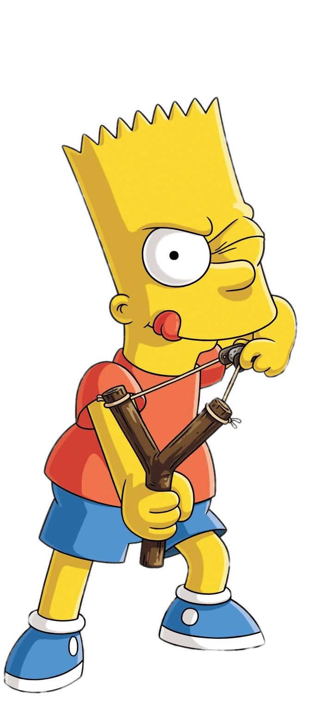

About Bart
Bart is a character from the television series "The Simpsons". He is a young boy who is known for pulling extreme pranks on his friends and family.
Bart with his famous slingshot.
Bart's
Characteristics
- He uses a slingshot
- He pulls pranks on everyone
- He always gets in trouble and his pranks backfires
Bart's Bullies
Bart has 4 main bullies who tease him and his best friend Millhouse. Click on the links below to read more about them.